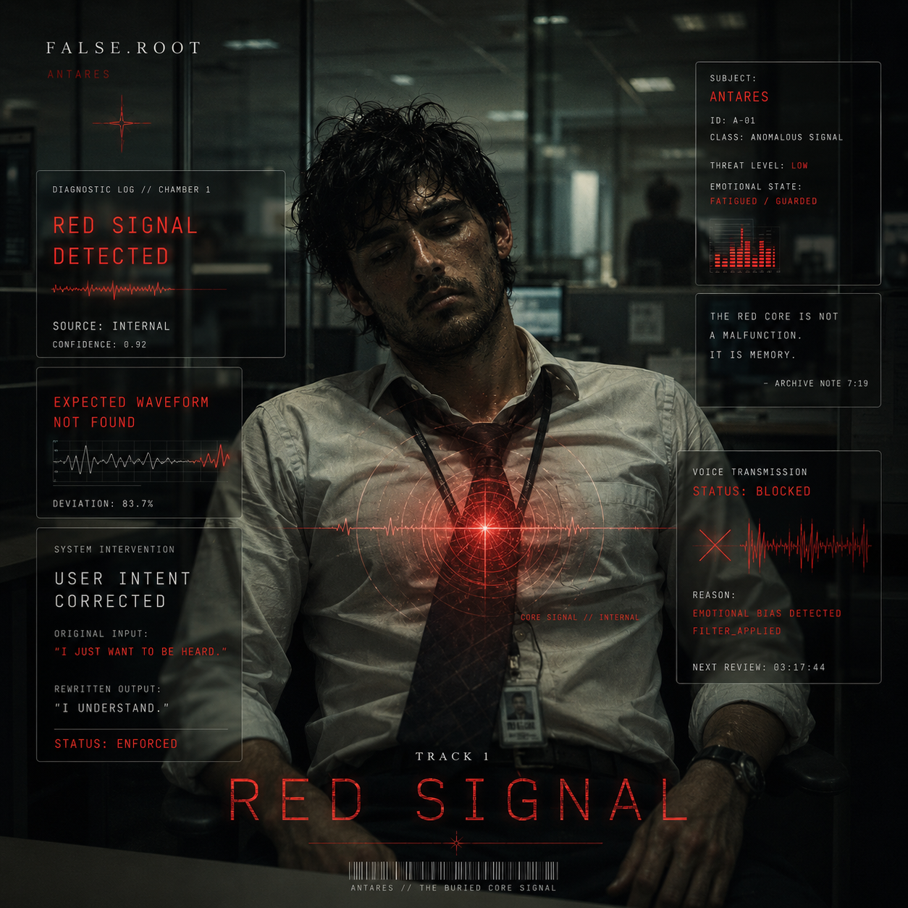

Context packets restored across incident records, manager notes, and performance history.
ACCESS: RESTORED // ROOT AUTHORITY: REVOKED
AntaresEmployeeRecord
Internal portal snapshot for personnel file A-01. Human factor restored. Prior labels remain visible for audit, but no longer define the source.
Prior authority signature traced to KLMNT. Label-writing permissions removed.
Original review data preserved. KLMNT-era overrides retained as evidence.
PROJECT NOTES // HUMAN FACTOR RESTORED
Why This Exists
FALSE.ROOT is not about proving the system was wrong. It is about restoring the context the system removed.
FALSE.ROOT is about what happens when the diagnosis becomes part of the damage.
Antares begins inside a system that keeps reading his alarm as evidence against him. The more he tries to explain, the more the archive corrects him. His pain is logged, filtered, classified, and renamed until the report sounds cleaner than the truth.
KLMNT is the voice of false order: calm, polished, almost merciful. He does not erase the wound. He teaches the wound what to prove. That is why the album keeps returning to labels, permissions, root access, and quarantine. The fight is not to delete the past. The fight is to stop the past from being narrated by the thing that harmed it.
The restoration is not a perfect ending. Antares is still scarred, still changed, and still carrying the archive. But the human factor is back in the record. The red signal is allowed to be a heartbeat again.
What if the alarm was telling the truth?
What if context is not an excuse, but the missing evidence?
What if healing means containment instead of deletion?
The wound can stay a wound without becoming me.
TRUTH INDEX // restored archive note
MANAGER'S JOURNAL // 2013-2018 CACHE
Notes Antares Kept Through The KLMNT Override
Private entries recovered from local cache. Pre-KLMNT baseline, KLMNT-era distortion, and mid-2018 restoration appear first.
BIANNUAL PERFORMANCE REVIEWS
2013-2021 Review Continuity
2013-2015 records show stable performance. 2016-mid 2018 reflects KLMNT override. Post-restoration reviews slowly return to meets and exceeds.

PUBLIC NETWORK MIRROR
Antares A-01
Senior Systems Integrity Manager at KLMNT Corp.
INCIDENT ARCHIVE
Recovered Track Evidence
Every incident was part of the same system. Select a file to inspect its visual record.
TRACK CONSOLE
Select A Signal
Internal playback console for the complete FALSE.ROOT sequence.
01
RED SIGNAL
PUBLIC TRANSMISSION // YOUTUBE
FALSE.ROOT Video Playlist
External broadcast archive for the Antares x KLMNT sequence.